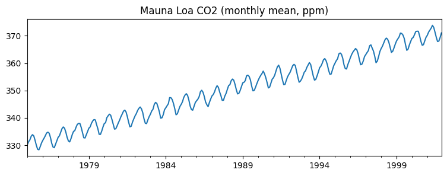
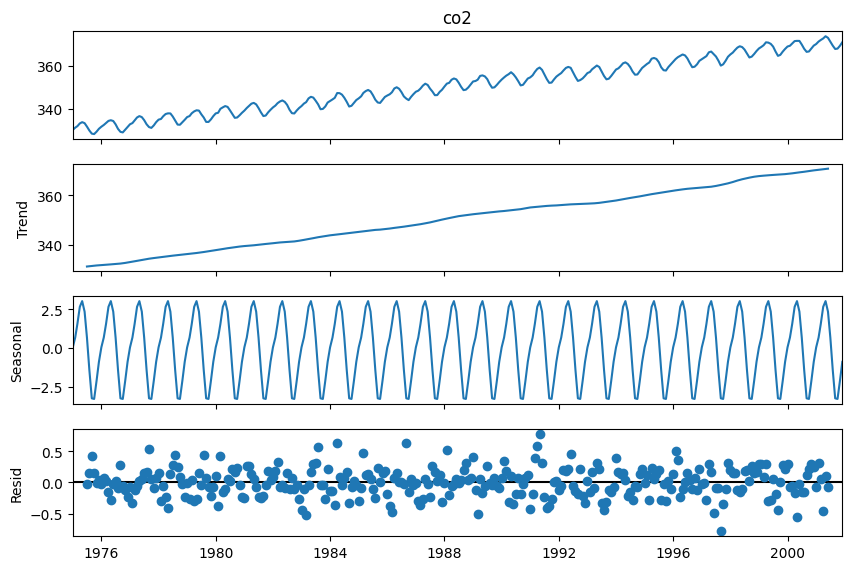
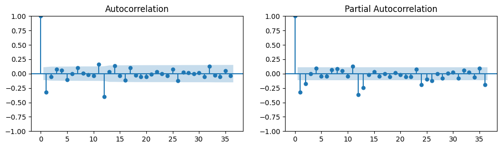
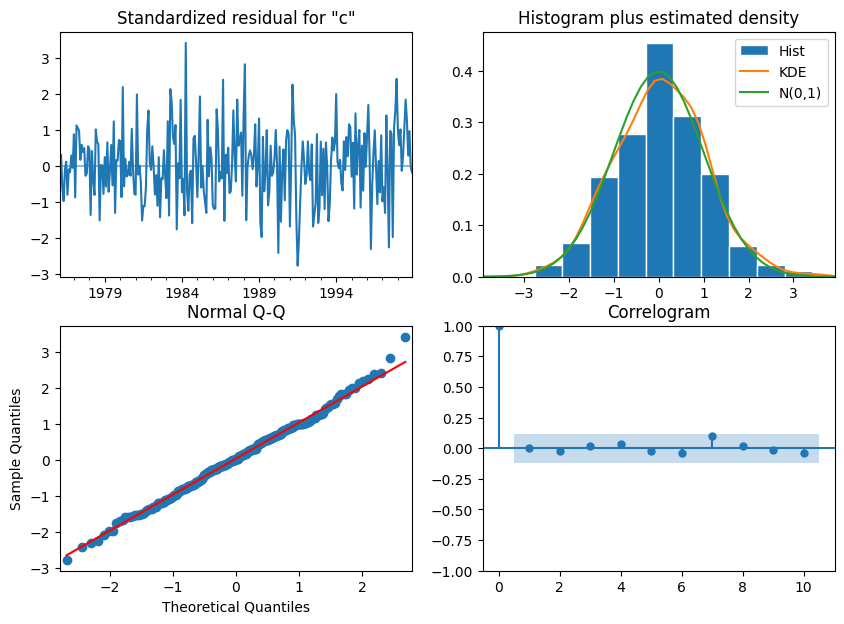
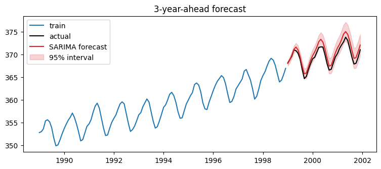

Walkthrough - Classical Forecasting with ARIMA#
On the classic Mauna Loa atmospheric CO2 series (weekly, 1958-2001) we will:
Decompose the series and reason about stationarity.
Read ACF/PACF plots after differencing.
Fit a SARIMA model and check its residuals.
Forecast with honest uncertainty intervals, and backtest against naive baselines.
Companion lesson: Lesson 01 - Classical Time Series Analysis.
import matplotlib.pyplot as plt
import numpy as np
import pandas as pd
import statsmodels.api as sm
from statsmodels.graphics.tsaplots import plot_acf, plot_pacf
from statsmodels.tsa.seasonal import seasonal_decompose
from statsmodels.tsa.statespace.sarimax import SARIMAX
from statsmodels.tsa.stattools import adfuller
co2 = sm.datasets.co2.load_pandas().data["co2"]
y = co2.resample("MS").mean().ffill() # monthly means, small gaps forward-filled
y = y.loc["1975":] # keep it modest for speed
print(y.index.min(), "to", y.index.max(), f"({len(y)} months)")
y.plot(figsize=(9, 3), title="Mauna Loa CO2 (monthly mean, ppm)")
plt.show()
1975-01-01 00:00:00 to 2001-12-01 00:00:00 (324 months)

Part 1 - Decomposition and stationarity#
Trend + strong annual seasonality: clearly non-stationary. The classical workflow: difference until stationary, model what remains.
decomp = seasonal_decompose(y, model="additive", period=12)
decomp.plot()
plt.gcf().set_size_inches(9, 6)
plt.show()

def adf_report(series, name):
stat, pvalue = adfuller(series.dropna())[:2]
print(f"ADF on {name:34s} p-value = {pvalue:.4f} ({'non-stationary' if pvalue > 0.05 else 'stationary'})")
adf_report(y, "raw series")
adf_report(y.diff(), "first difference")
adf_report(y.diff().diff(12), "first + seasonal difference")
ADF on raw series p-value = 0.9628 (non-stationary)
ADF on first difference p-value = 0.0007 (stationary)
ADF on first + seasonal difference p-value = 0.0000 (stationary)
Part 2 - ACF / PACF on the differenced series#
w = y.diff().diff(12).dropna() # d=1, D=1, s=12
fig, axes = plt.subplots(1, 2, figsize=(12, 3))
plot_acf(w, lags=36, ax=axes[0])
plot_pacf(w, lags=36, ax=axes[1], method="ywm")
plt.show()

The significant spike at lag 12 in the ACF (and its decay pattern) suggests a seasonal MA(1) term; the small early lags suggest low non-seasonal orders. A standard candidate for this series is the “airline model” SARIMA(0,1,1)(0,1,1)12 - we compare a small grid by AIC.
train, test = y[:-36], y[-36:] # hold out the last 3 years
candidates = [
((0, 1, 1), (0, 1, 1, 12)),
((1, 1, 0), (0, 1, 1, 12)),
((1, 1, 1), (0, 1, 1, 12)),
((0, 1, 1), (1, 1, 0, 12)),
((2, 1, 0), (0, 1, 1, 12)),
]
results = {}
for order, seasonal in candidates:
model = SARIMAX(train, order=order, seasonal_order=seasonal).fit(disp=False)
results[(order, seasonal)] = model
print(f"SARIMA{order}x{seasonal}: AIC = {model.aic:.1f}")
best_key = min(results, key=lambda k: results[k].aic)
best = results[best_key]
print("\nselected:", best_key)
SARIMA(0, 1, 1)x(0, 1, 1, 12): AIC = 106.3
SARIMA(1, 1, 0)x(0, 1, 1, 12): AIC = 112.8
SARIMA(1, 1, 1)x(0, 1, 1, 12): AIC = 108.3
SARIMA(0, 1, 1)x(1, 1, 0, 12): AIC = 168.8
SARIMA(2, 1, 0)x(0, 1, 1, 12): AIC = 108.4
selected: ((0, 1, 1), (0, 1, 1, 12))
Part 3 - Residual diagnostics#
A good model leaves white noise behind: flat residual ACF, roughly normal residuals, Ljung-Box p-values above 0.05. Structured residuals = missed signal.
best.plot_diagnostics(figsize=(10, 7))
plt.show()
lb = sm.stats.acorr_ljungbox(best.resid[13:], lags=[12, 24], return_df=True)
print(lb)

lb_stat lb_pvalue
12 6.09158 0.911395
24 16.29169 0.877261
Part 4 - Forecast with uncertainty, and backtest#
fc = best.get_forecast(steps=36)
ci = fc.conf_int()
plt.figure(figsize=(9, 3.5))
plt.plot(train[-120:], label="train")
plt.plot(test, label="actual", color="k")
plt.plot(fc.predicted_mean, label="SARIMA forecast", color="C3")
plt.fill_between(ci.index, ci.iloc[:, 0], ci.iloc[:, 1], color="C3", alpha=0.2, label="95% interval")
plt.legend(); plt.title("3-year-ahead forecast")
plt.show()

# baselines every forecast must beat
naive = pd.Series(train.iloc[-1], index=test.index) # last value
seasonal_naive = pd.Series(train.iloc[-12:].values.tolist() * 3, index=test.index) # same month last year
def rmse(a, b):
return float(np.sqrt(np.mean((a - b) ** 2)))
print(f"RMSE naive: {rmse(test, naive):.3f}")
print(f"RMSE seasonal naive: {rmse(test, seasonal_naive):.3f}")
print(f"RMSE SARIMA: {rmse(test, fc.predicted_mean):.3f}")
RMSE naive: 3.336
RMSE seasonal naive: 3.109
RMSE SARIMA: 1.047
Rolling-origin backtest#
One split is an anecdote. Refit on expanding windows and forecast 12 months from several origins - this is the honest way to evaluate any time-series model.
horizons = []
for origin in range(len(y) - 72, len(y) - 12, 12):
tr = y.iloc[:origin]
m = SARIMAX(tr, order=best_key[0], seasonal_order=best_key[1]).fit(disp=False)
pred = m.forecast(12)
horizons.append(rmse(y.iloc[origin:origin + 12], pred))
print(f"12-month RMSE across {len(horizons)} origins: {np.mean(horizons):.3f} +- {np.std(horizons):.3f}")
12-month RMSE across 5 origins: 0.570 +- 0.273
TODO exercises#
Refit the model without the seasonal part (
seasonal_order=(0,0,0,0)) and look at the residual ACF - where does the missed structure show up?Add Holt-Winters (
statsmodels.tsa.holtwinters.ExponentialSmoothing, additive trend + seasonality) to the baseline table. Does it beat SARIMA here?Shuffle-split validation: deliberately evaluate with a random train/test split of rows and watch the “accuracy” become absurdly optimistic. Explain the leakage.
Widen the forecast horizon to 10 years and look at the interval width - why do the intervals keep growing?